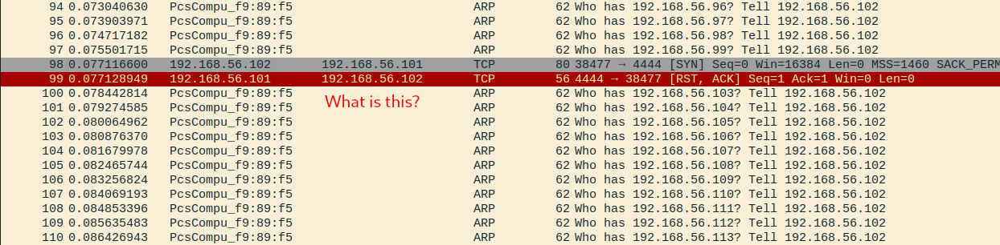

Necromancer1 is a machine with an obsession for cryptic paragraphs and unorthodox ports, can we figure out how to defeat the Necromancer?`
This post is a part of the vulnhub series!
The first step is to determine the target machines IP address within our network. While I would typically utilize something such as nmap or netdiscover during this step, this particular machine appeared to have no open ports at first glance.
I instead opted to leave an instance of wireshark open, waiting to capture a DHCP request sent by the necromancer across the network as noted within the Necromancer vulnhub page.
After taking note of the devices IP address, I attempted various flavors of reconnaissance against the machine. After having little success, I decided to take a break while leaving wireshark open as a “Hail Mary”.

Upon return, I quickly noticed an odd TCP request against port 4444 targeting my machine. After confirming that it did not originate from somewhere else within the network I spun up an instance of netcat to catch the incoming request.
netcat -lvnp 4444 ## Starts a reverse listener on port 4444
The string we received was clearly encoded in some format or another. Lets attempt to decode it utilizing base64, as the string hints at being encoded in this standard.
base64 -d ## Decodes base64 data
Inside of the extremely cryptic message we’ve received from our netcat listener, we are instructed to chant the string of our received flag to u666.
Other than this being a nod to the occult (which we love here), the u may in fact be a clue to send this received flag over the port 666 using UDP. We will utilize netcat to send our data via echo, with the appropriate -u flag.
echo -n 'flag_here' | nc -u <ip> <port> ## Echos a string into a given port
After attempting to send the flags string directly to port 666, we get a message indicating that our “chant” is in the wrong tongue.
Due to this box having the tendency to encrypt everything, I went ahead and sent it over to crackstation in order to hopefully return a decrypted string.
Awesome! Now that we have the correct tongue for our chant, we can again attempt a connection to the machine.
80… FINALLY! We now have a normal port we can investigate! After noting down the new flag, I went ahead and pulled up a web browser and navigated to the machines HTTP server.
Other than the text describing more of our adventure, there is not much here. I poked around for a while, but ended up deciding to take a deeper look into the included image file.
In addition to the magic bytes clearly indicating that this is not a normal picture, we are able to see the presence of a .txt file hidden within by utilizing the strings command.
Knowing this, I quickly tried a few methods of data extraction before successfully gaining access to the file.
Our newly extracted file contains another base64 encoded string, with its contents hinting at a new path within our web server to visit: /amagicbridgeappearsatthechasm
This step actually had me stumped for quite a while. While my initial intuition of directory busting was in fact correct, I was not utilizing a wordlist that aligned with the instructions presented to us on the new directory. By trial and error, and utilizing the tool cewl to generate a custom wordlist, I was able to generate a wordlist of magical items to feed into dirb.
cewl "https://en.wikipedia.org/wiki/Magic_item_(Dungeons_%26_Dragons)#Major_artifacts" -d 1 -w wordlists.txt ## Creates a custom wordlist from a given url
dirb <url> <wordlist> ## Bruteforce directories on a given url
With our newly discovered artifact (talisman), we are able to venture deeper into the chasm ahead.
After visiting our newly discovered directory, we are presented with a binary executable.
A quick glance using strings notes some exposed function names, indicating that we may be able to bypass a check within the function that looks for a proper input before continuing. I quickly loaded up gdb and took a look at its internal functions.
After noticing the function “chantToBreakSpell” following the wearTalisman function, I determined that a jmp operation after setting a breakpoint at our “wearTalisman” function could exploit the binary.
Success! It seems to be another md5 encoded string, so another visit to crackstation reveals to us our next flag to chant (blackmagic). This time we will chant to the UDP port 31337 as noted within our talisman program.
After echoing our flag into our newly discovered port, we are met with the continuance of our storyline coupled with a new directory: /thenecromancerwillabsorbyoursoul
Upon vising the directory, we are met with the most horrifying sight in recent history. Its the necromancer!
Terrifying huh…
Anyway, at the very end of the site we are casually informed of the port u161. There is also a hyperlink for the word “necromancer”, which upon visit begins another download.
I quickly extracted this file using tar, leading us to a .cap file. Time for some network analysis!
tar -xvf necromancer
This is probably the only time my day job has been explicitly useful in solving a vulnhub machine. Upon first inspection of the file, its clear that this is a capture of a de-authentication attack being performed against a client. We can now utilize aircrack-ng in order to break this eapol capture, granting us a possible password.
aircrack-ng -w <wordlist> <capture_file>
After cycling through the rockyou dictionary for a bit, we are presented with our password (death2all).
Keeping our new password/string in our pocket, I decided to chant into port u161 as we had done with the previous steps. After having no results, both with chants and without, I decided to throw on the verbose flag and simply connect to the machine over port 161.
Sometimes its the simplest of things.
Well, I got a little wrapped up in the story and forgot that 161 is normally SNMP. Since we had a string already (death2all), I decided to try and exploit the protocol using community strings.
snmpwalk -v 2c -c death2all <IP>
snmpset -v 2c -c death2allrw <IP> iso.3.6.1.2.1.1.6.0 s "Unlocked"
As shown in the picture below, it was as simple as using the read/write community string given by the necromancer to modify a specific string from “Locked” to “Unlocked”. Sweet!
We are given another md5 hash to crack (thank you again, crackstation), alongside the hint t22.
Upon being given the string demonslayer alongside our hint of 22, I am going to assume that we have discovered the necromancers ssh username. Time to brute-force for some credz!
As with most things in pentesting, there are multiple tools to accomplish this task. For this example, I will be utilizing THC hydra to attempt to brute-force into the ssh protocol.
hydra -l demonslayer -P /usr/share/wordlists/rockyou.txt -t 4 -V <IP> ssh
Hydra returns us the correct password pretty quickly, that being 12345678. Lets login to the box and take a look around the necromancers lair.
ssh demonslayer@<IP>
After looking around and checking sudo -l (only for the box to ask me if I’m on drugs), I noticed the next flag and attempted to remotely connect to the mentioned port. After no success, I attempted to connect locally on the machine only to find that…
…I am now in combat???
Having no idea what to do here, I quickly googled the quote(s) presented in order to provide the correct answer(s) and avoid certain death!
Where do the Black Robes practice magic of the Greater Path? Kelewan
Who did Johann Faust VIII make a deal with? Mephistopheles
Who is tricked into passing the Ninth Gate? Hedge
Afterwards we are left with another cryptic message hinting towards the existence of a small vile. Some quick reconnaissance around the machine led me to locating the .smallvile file.
locate smallvile
At first I had assumed that we had obtained sudo , only for sudo su to throw an error message. This message, however, was different than my previous message.
Knowing some permissions had to have been modified, I tried a last ditch effort to reach the flag. By fishing for its existence within the root directory, utilizing the previously established naming convention, I was able to read the contents of the final flag.
cat /root/flag11.txt
At last… victory.
https://en.wikipedia.org/wiki/Empire_Trilogy
https://stackoverflow.com/questions/37389178/send-string-over-netcat-connection
The eldritch tomb breathes as you unseal its ancient bindings, forgotten curses searing your mind as you ingest its forbidden knowledge.